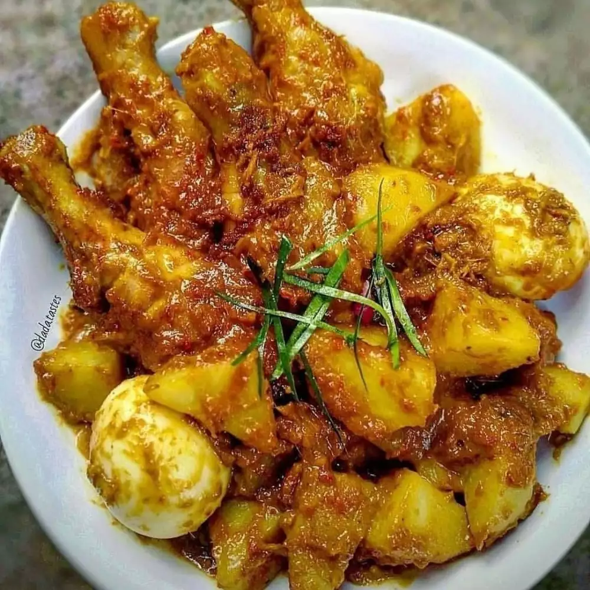
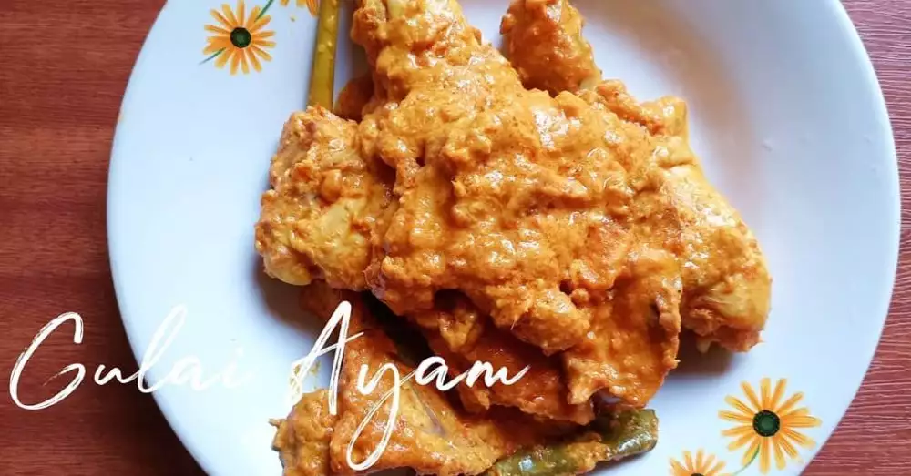
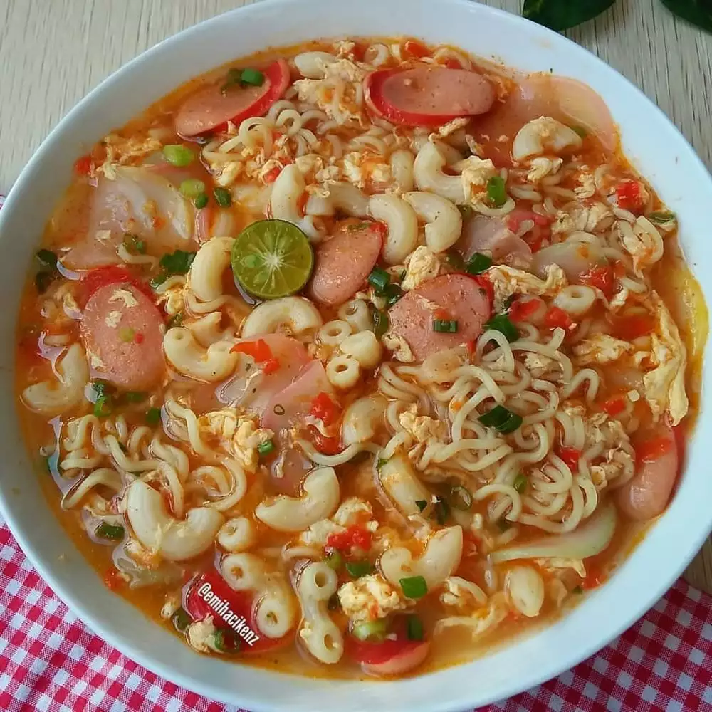

Website Resep Makanan
1. Rendang paha ayam organik.

Bahan:
- 4 paha ayam organik
- 2 buah kentang, potong-potong
- 2 butir telur rebus
- 1 lembar daun kunyit, iris
- 4 lembar daun jeruk
- 2 lembar daun salam
- 1 bungkus kerisik atau kelapa parut kering
- 200 ml santan dan air
- Garam
- Gula malaka
- Penyedap rasa
Bahan halus:
- 8 butir bawang merah
- 3 butir bawang putih
- 1 cm kunyit
- 1 cm jahe
- 1 cm lengkuas
- 2 batang serai
- 3 buah cabai rawit
- 3 buah cabai merah
Cara membuat:
- Goreng kentang, sisihkan.
-
Panaskan minyak, tumis bahan halus sampai kering dan pecah minyak.
-
Masukkan ayam tumis sebentar, kemudian masukkan santan dengan air,
aduk rata.
- Masukkan kerisik, daun jeruk, daun salam, dan daun kunyit.
-
Kemudian masukkan kentang dan telur rebus, tambahkan garam, glia
malaka, dan penyedap rasa.
-
Masak dengan api kecil sampai air kering, jika ingin berkuah jangan
masak sampai kering.
2. Gulai ayam.

Bahan:
- 1/2 ekor ayam
- 1 buah jeruk nipis
- 1 batang serai geprek
- 2 lembar daun salam
- 2 lembar daun jeruk
- 200 ml santan encer
- 200 ml santan kental
- Air matang secukupnya
- Garam dan kaldu bubuk
Bumbu halus:
- 6 siung bawang merah
- 3 siung bawang putih
- 3 butir kemiri sangrai
- 4 cm lengkuas muda
- 3 cm kunyit
- 3 cm jahe
- 1 sdm ketumbar
- 1 sdt lada bubuk
- 5 buah cabai rawit
- 10 cabai merah keriting
Cara membuat:
-
Cuci bersih daging ayam dan lumuri dengan jeruk nipis, diamkan kurang
lebih 10 menit.
-
Tumis bumbu halus sampai wangi, masukkan daun salam, daun jeruk, dan
serai, aduk sampai bumbu matang, masukkan ayam, aduk rata, masak
sampai berubah warna, tambahkan garam dan kaldu.
-
Masukkan santan encer dan air, masak dengan api sedang sampai daging
ayam empuk.
-
Setelah kuah menyusut dan daging ayam empuk, masukkan santan kental,
masak sambil terus diaduk sampai santan mendidih dan bumbu meresap.
3. Indomie seblak macaroni.

Bahan:
- 1 bungkus mi instan rasa ayam bawang, rebus
- 30 gr macaroni rebus, tiriskan
- Kerupuk bawang mentah, rendam air panas dan beri sedikit minyak
- Daun bawang, iris
- 1 buah sosis, iris
- 1 buah telur, kocok lepas
- 2 gelas air
- Garam dan gula
Bumbu halus:
- 3 bawang merah
- 2 bawang putih
- 5 cabai merah keriting
- 3 cabai rawit atau sesuai selera
- 1 cm kencur
Cara membuat:
- Tumis bumbu halus dengan sedikit minyak.
-
Masukkan air, setelah mendidih masukkan kocokan telur, lalu aduk.
-
Masukkan macaroni, sosis, kerupuk, dan mi, beri gula, garam, dan bumbu
mi.
- Aduk rata, tes rasa, angkat, sajikan dengan daun bawang.